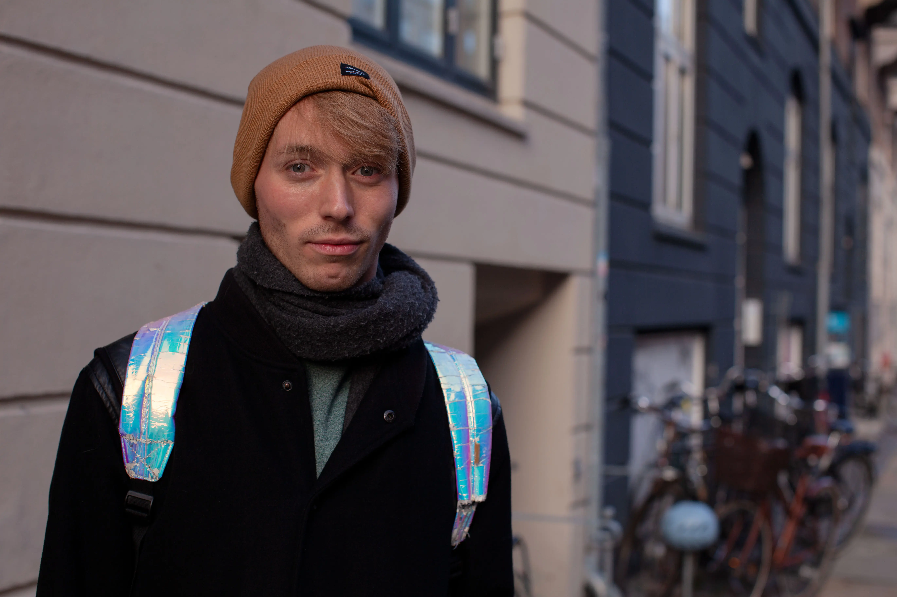
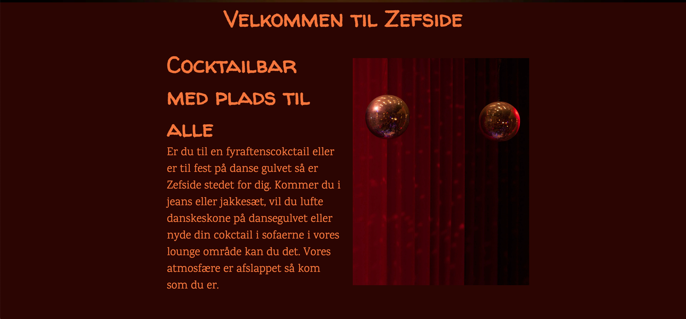

Tema 05 – Grundlæggende indhold
05.01.01 Pilotprojekt video og billeder
Til pilotprojektet skulle vi i grupper af 2, lave en video på 1 min af et interview med en person som har en passion. Vi forberedte os ved at lave en interviewguide med spørgsmål og tillægsspørgsmål vi kunne bruge hvis vi ville have uddybet noget. Vi lavede også et storyboard over hvilke framings, billede udsnit og b-roll vi skulle filme, da vi ville være så forberedt som muligt til optagelsesdagen.
05.02.01 Redesign og temadokumentation
I redesign opgaven var der lagt stort vægt på gruppearbejde og hvordan man sammen kommer i mål med en opgave. Vi blev introduceret til SCRUM som en del af vores arbejdsmetode og brugte gruppekontrakter for at forventnings afstemme inden vi gik i gang med arbejdet og delte ansvarsområder ud. Som en del af researchen lavede vi et survey, BERT test og 5 sekunders test af virksomhedes originale site. Det researchen gav os brugte vi til at lave en interviewguide til vores optagelse dag, hvor vi også have forberedt storyboard til videoen og ideer til billeder. Desværre meldte virksomheden afbud i sidste øjeblik, så vi gik ud fra vores research, videoplaner og fra vores besøg hos virksomheden, til at lave redesignet, på grund af tidspres. I processen med at kode og sætte site op brugte vi github som værktøj til at hele grupen kunne arbejde sammen, men med hver vores område. Efterfølgende lavet vi lighthouse pagespeed test for at se om vores site virkede optimalt.
